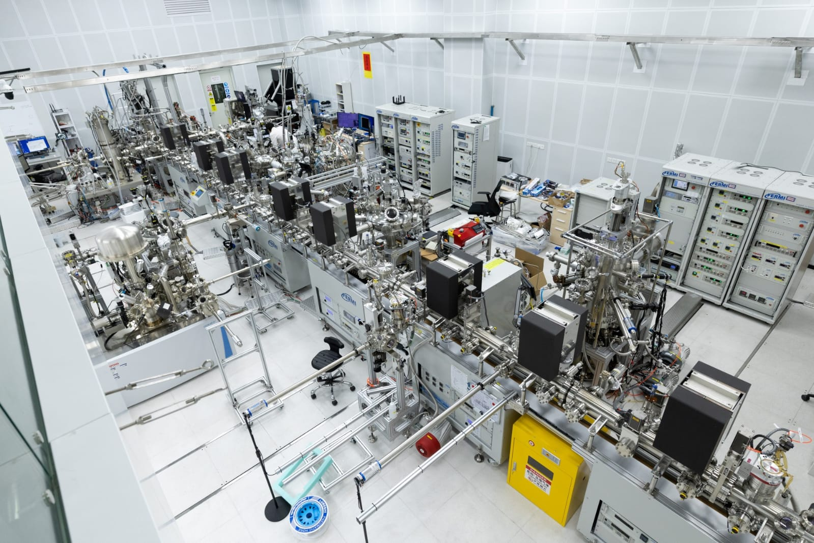

Physics researcher with expertise in physics, chemistry, scientific computing, laboratory research, data analysis, and AI model evaluation. Experienced in scientific visualization, computational analysis, technical documentation, CAD-related content assessment, and AI training projects involving reasoning evaluation, prompt engineering, and multimodal data review.

MATLAB, Python, Jupyter Notebook, Mathematica, GNU Octave, Microsoft Excel, ParaView, VisIt, Tecplot, OriginPro, COMSOL Multiphysics, ANSYS, OpenFOAM, SimScale, LaTeX, Git, GitHub, GraphPad Prism, ImageJ
Scale AI Platform, Prompt Engineering, AI Response Evaluation, RLHF Evaluation, Data Annotation, Quality Assurance, Image Rating, Video Annotation, Multimodal Assessment, CAD Drawing Evaluation, AutoCAD Content Evaluation, FreeCAD Content Evaluation, Blender 3D Model Evaluation, OpenSCAD Model Review
Indianola, MS 38751